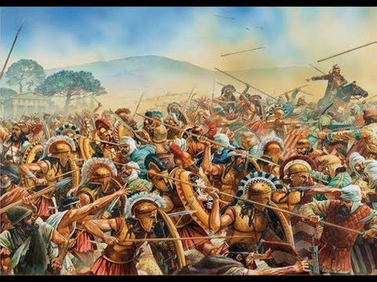
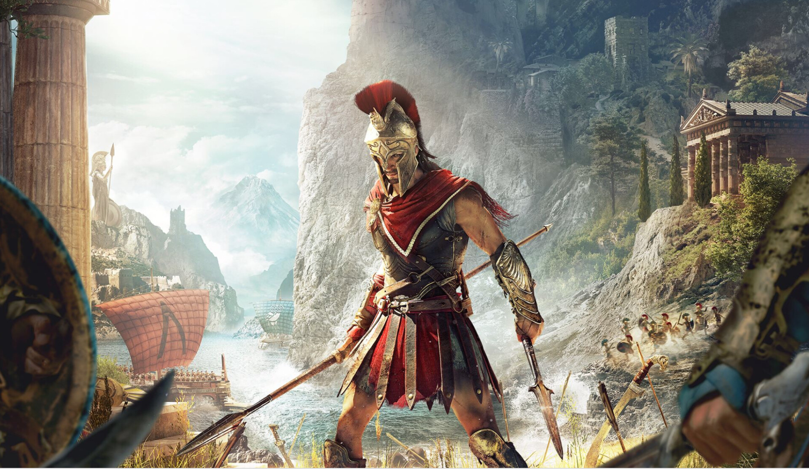

de Perzische oorlogen
De Perzische oorlogen vonden plaats tijdens de klassieke periode. Deze oorlogen veroorzaakten eigenlijk elkaar, waardoor je ze ook als één grote oorlog kan zien.
 De Perzische oorlogen begonnen met een opstand van de Griekse kolonies in Ionië, omdat de Perzen daar de heerschappij hadden. Athene stuurde een paar schepen om de opstand te helpen. De Perzen wilden de Grieken hiervoor straffen, maar tijdens hun expeditie werden ze door Athene verslagen.
Na dit eerste conflict met de Perzen had de strateeg Themistokles bedacht om een vloot en lange muren van de stad naar de haven te bouwen, zodat Athene voorbereid zou zijn voor een eventuele volgende aanval. Deze kwam ook zo'n 10 jaar later onder leiding van de nieuwe Perzische koning Xerxes in 480 v.C. Zijn aanval was al gebprobeerd te stoppen door de Spartanen, maar de Spartanen werden vernederend verslagen door het enorme leger en de sterke vloot van de Perzen. Daarna trokken de Perzen door naar Athene, waar ze de stad verwoestten. De inwoners van de stad waren uiteidelijk veilig op het eiland Salamis voor de kust. Hier versloeg de Atheense vloot de Perzen onder leiding van Themistokles. Hiervoor gebruikten zij een list en kregen ze hulp van andere Griekse schepen. Op dit moment werd er definitief met de Perzen afgerekend.
Na deze overwinning richtten de Grieken de Delisch-Attische zeebond op. De andere stadstaten betaalden Athene geld, zodat zij de vloot instand konden houden. Dit geld werd uiteindelijk steeds meer gebruikt voor andere dingen, zoals de herbouw van de akropolis en tussen 461 v.C. en 466 v.C. vocht Sparta hierom tegen Athene.
de Peloponnesische oorlog
Deze oorlog is een oorlog tussen Sparta en Athene, maar omdat beiden veel bondgenootschappen hadden gesloten was bijna de hele Griekse wereld bj deze oorlog betrokken.
De sterkste kant van de Spartanen was hun landleger en die van de de Atheners was hun vloot. Hierdoor gebeurde er bijna niets in deze oorlog, totdat er in Athene de pest uitbrak. Toch konden de Atheners de Spartanen weren en ze konden aanvallen uitvoeren op de Peloponnesos. Omdat geen van beiden een overwinning kon halen werd er in 421 v.C. een wapenstilstand getekend.
 Tijdens deze wapenstilstand kreeg in Athene Alkibiades veel invloed en haalde hij de Atheners over om naar Sicilië te gaan voor een expeditie. Omdat hij tegelijkertijd werd aangeklaagd voorreligieuze schandalen, ging hij naar Sparta. Daar kreeg hij het voor elkaar om de Spartanen te betrekken in de oorlog op Sicilië, waar ze Athene versloegen. Daarna ging Sparta naar de de Perzen voor geld en technieken om een vloot te bouwen, waarmee ze uiteielijk Athene helemaal versloegen. De Delisch-Attische Zeebond werd verbroken, de lange muren tussen de stad en de haven van Athene werden vernietigd en de Atheense democratie werd vervangen door een oligargisch bewind.
Aangezien de twee grootste Grieks machten nu heel erg verzwakt waren, kon geen enkele stadstaat meer een leidende rol hebben. Daardoor konden de Grieken geen weerstand bieden tegen de Macedoniërs en werden de stadstaten allemaal onderworpen door hen.